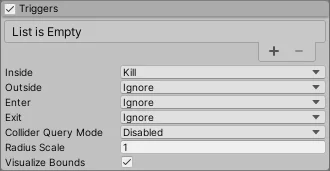

The Built-in Particle System’s Triggers module allows you to access and modify particles based on their interaction with one or more Colliders in the Scene.

For some properties in this section, you can use different modes to set their value. For information on the modes you can use, refer to Vary Particle System properties over time.
| Property | Description |
|---|---|
| Inside | Specifies the action the Particle System takes for particles every frame they are inside a Collider. The options are: • Callback: Adds the particle to a list which you can retrieve in the OnParticleTrigger() callback • Kill: Destroys the particle. • Ignore: Ignores the particle. |
| Outside | Specifies the action the Particle System takes for particles every frame they are outside a Collider. The options are: • Callback: Adds the particle to a list which you can retrieve in the OnParticleTrigger() callback • Kill: Destroys the particle. • Ignore: Ignores the particle. |
| Enter | Specifies the action the Particle System takes for particles in the frame they enter a Collider. The options are: • Callback: Adds the particle to a list which you can retrieve in the OnParticleTrigger() callback • Kill: Destroys the particle. • Ignore: Ignores the particle. |
| Exit | Specifies the action the Particle System takes for particles in the frame they exit a Collider. The options are: • Callback: Adds the particle to a list which you can retrieve in the OnParticleTrigger() callback • Kill: Destroys the particle. • Ignore: Ignores the particle. |
| Collider Query Mode | Specifies the method this Particle System uses to get information about the Colliders that particles interact with. This increases the resource intensity of processing the Triggers module so, if you do not need any extra collision information, set this property to Disabled. The options are: • Disabled: Does not get any information about which Collider each particle interacts with. • One: Gets information about the first Collider each particle interacts. If a particle interacts with multiple Colliders in the frame, this returns the first Collider in the Collider list the particle interacted with. • All: Gets information about every Collider each particle interacts with. |
| Radius Scale | The particle’s Collider bounds. This allows you to match the particle’s Collider bounds to the visual appearance of the particle more closely. This is useful if a particle is circular with a fade in its texture because the default particle Collider would be inside the trigger before the particle visually looks to be. Note that this setting does not change when the event actually triggers, but can delay or advance the visual effect of the trigger. • Enter 1 to keep the particle Colliders the same size and for the event to appear to happen as a particle touches the Collider. • Enter a value less than 1 to make the particle Colliders smaller and for the trigger to appear to happen after a particle penetrates the Collider • Enter a value greater than 1 to make the particle Colliders larger and for the trigger to appear to happen before a particle penetrates the Collider |
| Visualize Bounds | Indicates whether to display the Collider bounds of each particle in the Scene view. Enable this property to display the Collider bounds and disable it to hide the Collider bounds. |